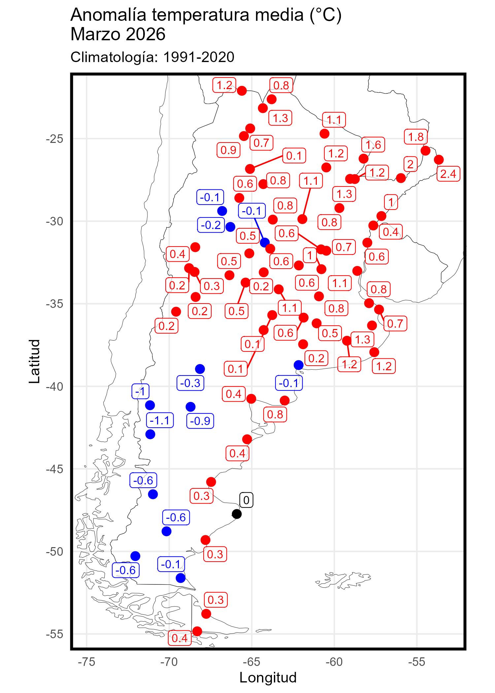

Bienvenidos a seguimiento_temperaturas_argentina

Temperaturas medias mensuales, estacionales y anuales.
API con datos en tiempo real
Probá nuestra API accediendo a este link.
Datos diarios de temperatura mínima y máxima.
Datos diarios de temperatura mínima y temperatura máxima pueden ser consultados en este blog. Incluye información de estaciones desactivadas y de otras redes.
Anomalía de la temperatura mínima media y máxima media mensual al norte de los 40°S desde el año 1971, siguiendo la metodología descripta en este posteo.
© 2026 Registro de Temperaturas en Argentina